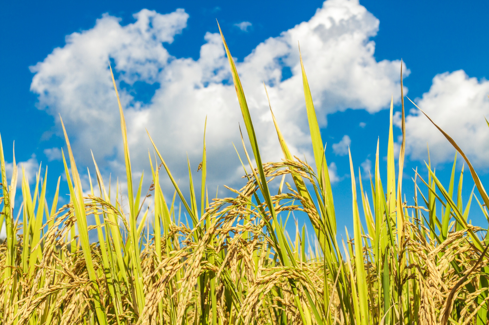
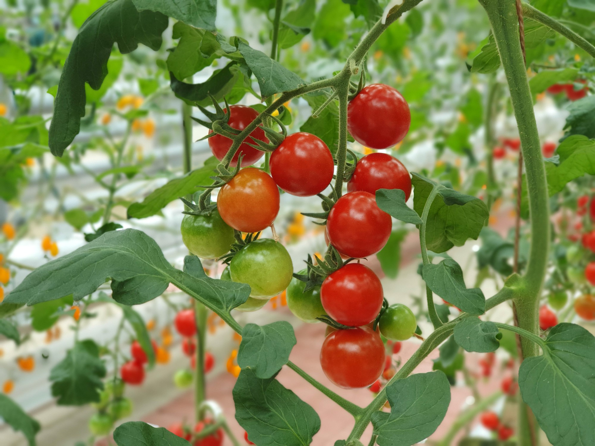
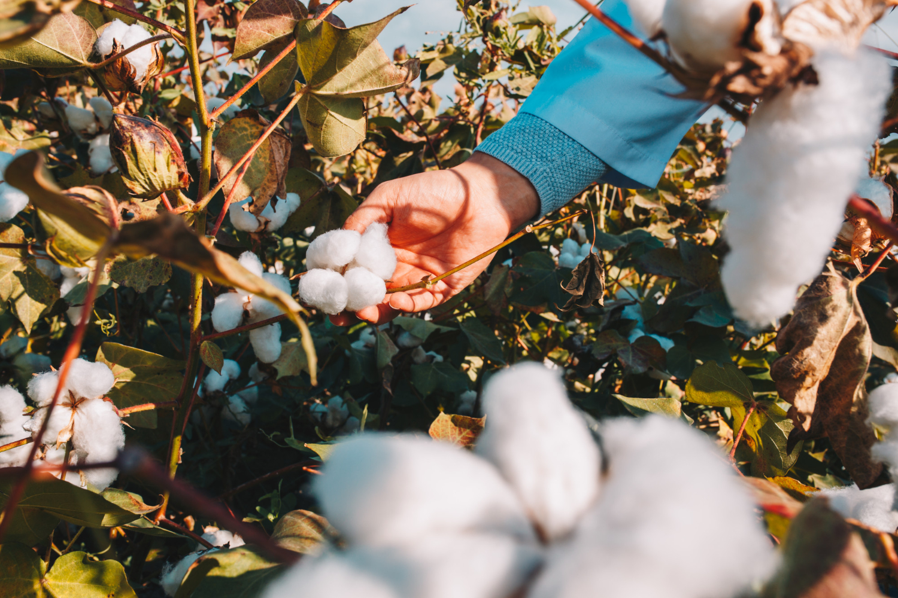
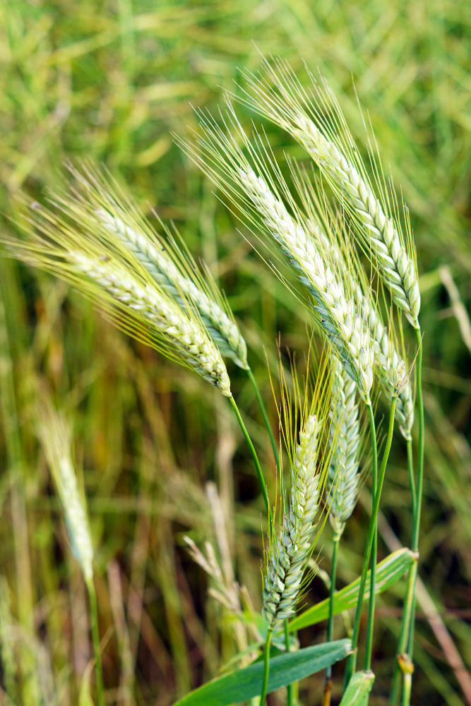
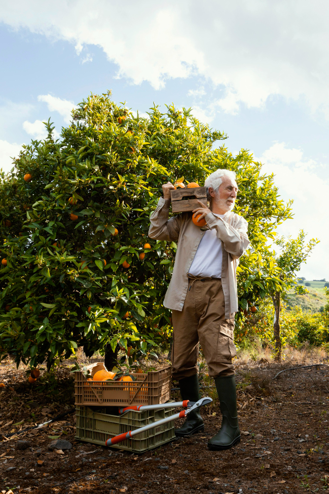
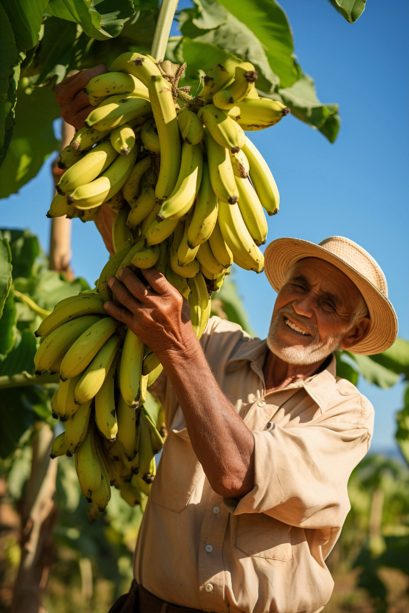
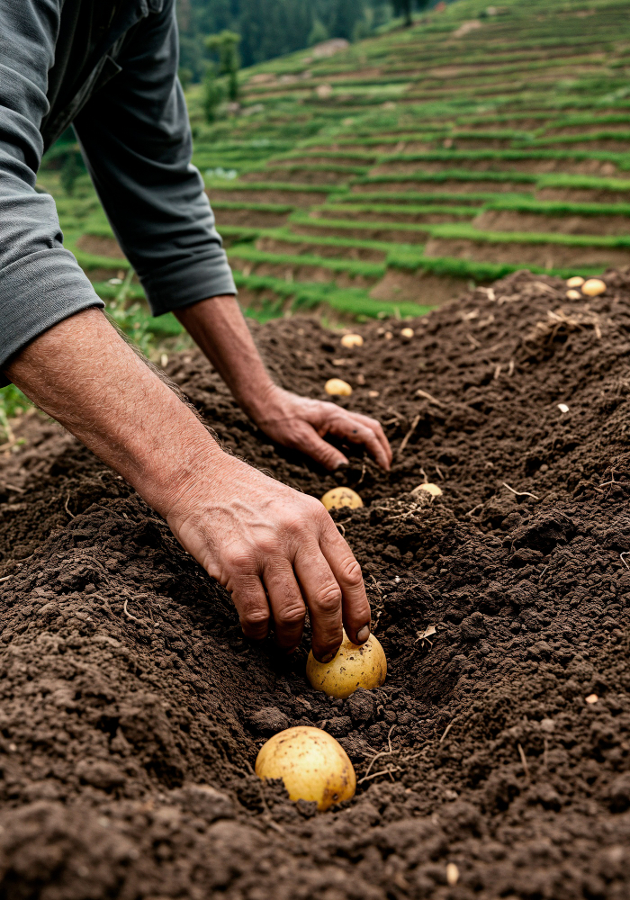

Comprehensive Crop Guide
Explore information on different crops, including varieties, cultivation methods

Rice
Basmati, Jasmine, Arborio, and Long Grain Brown Rice.
Flooded fields, either direct-seeded or transplanted.
Clay or silty clay with high water retention, pH 5.5 to 6.5.
Moisture below 20%, often harvested with a rice harvester.

Tomatoes
Cherry, Roma, Beefsteak, and Heirloom Tomatoes.
Grown in raised beds or pots, support stakes for growth.
Rich, loamy soil, pH 6.0 to 6.8, with regular compost.
Hand-picked when ripe for fresh or processing markets.

Cotton
Upland, Pima, and Sea Island cotton.
Planted in warm regions, typically requiring irrigation.
Well-drained loamy soil, pH 6.0 to 7.5.
Mechanized harvesting with cotton pickers or strippers.

Oranges
Valencia, Navel, and Blood Oranges.
Planted in well-drained soil, with adequate water and sunlight.
Loamy soil, pH 5.5 to 6.5.
Hand-picked when fruit is fully ripe.
Major Crop Categories & Profiles
Detailed insights into grains, fruits, vegetables, and cash crops including nutritional profiles and commercial uses.
Grains

Wheat
Hard Red Winter, Hard Red Spring, Soft Red Winter, and Durum wheat.
Late fall or spring planting; suitable for both plowing and no-till farming.
Loamy or sandy loam, pH 6.0 to 7.5, well-drained.
Combine harvesters, with grain moisture below 14% for storage.
Calories: 340 kcal
Protein: 13g
Carbohydrates: 71g
Fat: 1.5g
Fiber: 12g
Iron: 3.6 mg
Wheat is used in bread, pasta, cakes, crackers, and as animal feed. It's also used to make flour for various products.
Rice
Basmati, Jasmine, Arborio, and Long Grain Brown Rice.
Flooded fields, either direct-seeded or transplanted.
Clay or silty clay with high water retention, pH 5.5 to 6.5.
Moisture below 20%, often harvested with a rice harvester.
Calories: 130 kcal
Protein: 2.7g
Carbohydrates: 28g
Fat: 0.3g
Fiber: 0.4g
Iron: 0.8 mg
Rice is used as a staple food, served with vegetables, meats, or made into rice pudding, sushi, and rice flour.
Fruits

Apples
Fuji, Granny Smith, Gala, and Honeycrisp apples.
Planted in well-drained soil, often grown on dwarf rootstocks for easier harvest.
Well-drained, slightly acidic soil, pH 6.0 to 6.5.
Hand-picked when ripe, sorted, and stored in cool, dry conditions.
Calories: 52 kcal
Protein: 0.3g
Carbohydrates: 14g
Fat: 0.2g
Fiber: 2.4g
Vitamin C: 4.6 mg
Apples are eaten raw, juiced, used in pies, crisps, sauces, or made into apple cider and vinegar.

Bananas
Cavendish, Red, and Apple Bananas.
Grown in tropical climates with high humidity, bananas are harvested once they reach full size.
Well-drained, rich soil, pH 5.5 to 7.0.
Harvested by cutting the entire bunch when they are green.
Calories: 89 kcal
Protein: 1.1g
Carbohydrates: 23g
Fat: 0.3g
Fiber: 2.6g
Potassium: 358mg
Bananas are eaten fresh, used in smoothies, baked goods, or dried as chips. They are also used for their pulp in cooking and as an ingredient in baby food.
Vegetables

Potatoes
Russet, Yukon Gold, Red, and Fingerling potatoes.
Planted in early spring, harvested after 3-4 months when the plant dies back.
Well-drained, slightly acidic soil, pH 5.5 to 6.5.
Mechanized or hand-harvested, ensuring the tubers are undamaged.
Calories: 77 kcal
Protein: 2g
Carbohydrates: 17g
Fat: 0.1g
Fiber: 2.2g
Potassium: 429mg
Potatoes are used in mashed potatoes, fries, chips, and stews, or boiled and served as a side dish.
Cash Crops
Cotton
Upland, Pima, and Sea Island cotton.
Planted in warm regions, typically requiring irrigation.
Well-drained loamy soil, pH 6.0 to 7.5.
Mechanized harvesting with cotton pickers or strippers.
Calories: 506 kcal
Protein: 32.6g
Carbohydrates: 21.9g
Fat: 36.3g
Fiber: 5.5g
Iron: 4.8 mg
Cotton fibers are used for textiles, clothing, denim, and paper products.